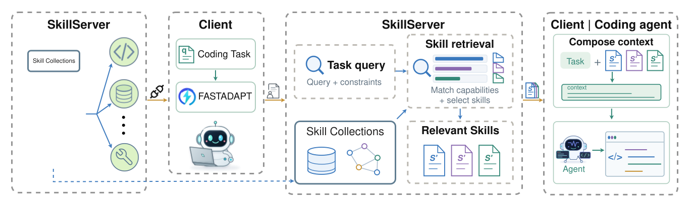
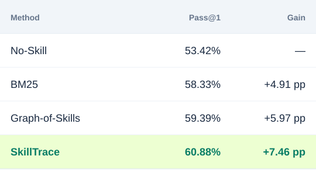
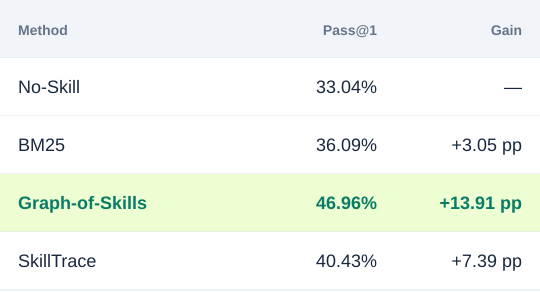
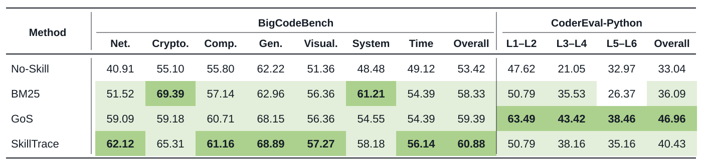
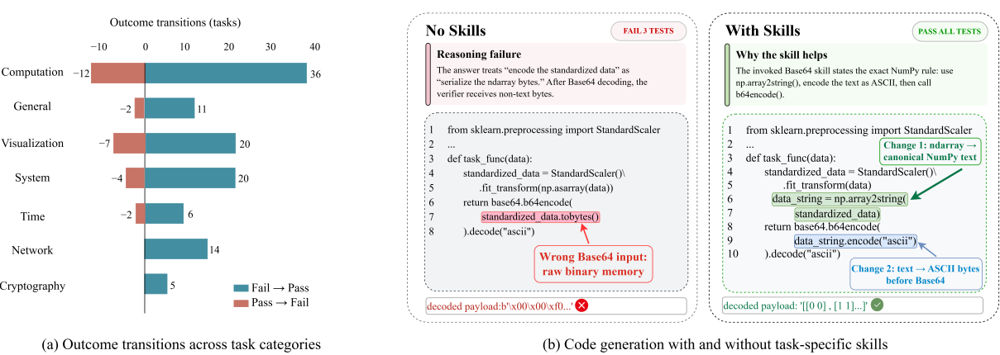
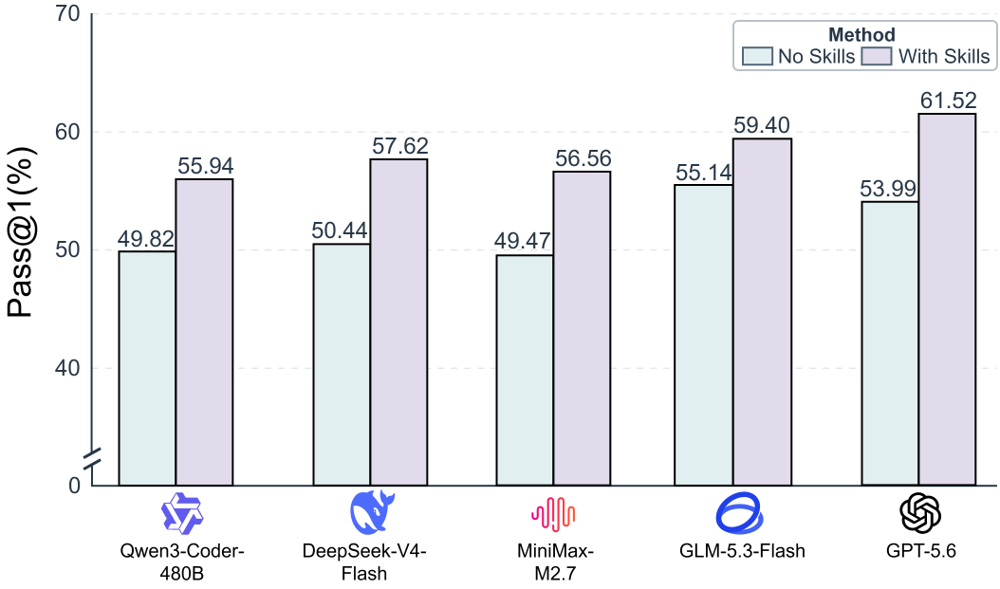
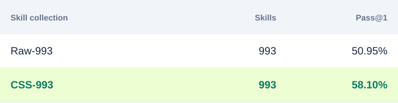

⌕
Collect
Discover public skills from GitHub, Skills.sh, and SkillsMP.
1 Shandong University 2 Guangzhou University 3 Independent Researcher
Agent skills have proven to be an effective technique for improving agent ability on specific tasks, including software engineering, natural science, and mathematics. During such a process, using agent skills often involves manually discovering and organizing skills from heterogeneous sources, while existing skill retrieval methods mainly focus on selecting relevant skills from established skill libraries. However, with the rapidly increasing number and variety of reusable agent skills, manually searching for relevant skills across heterogeneous sources is becoming impractical at scale. In this paper, we introduce the Code Skill Server (CSS), a large-scale search engine for finding the most useful code generation skills for a target task. CSS consists of a skill server that incrementally collects and indexes publicly available code generation skills from multiple sources, with 993 skills included in the corpus used in this work. Extensive experiments across different retrieval methods and code generation benchmarks show that the best CSS configuration improves Pass@1 by up to 13.91 percentage points and consistently improves all evaluated models by at least 4.21 percentage points in the cross-model evaluation. These results demonstrate that CSS can effectively search for and serve relevant skills, improving code generation quality and enhancing models’ code generation capabilities.
CSS studies an end-to-end workflow for turning scattered public coding knowledge into task-specific guidance for code-generation agents.
Building the skill collection. The SkillServer searches public code repositories and skill registries, including GitHub, SkillsMP, and Skills.sh. It reads candidate SKILL.md files, filters out records without direct code-generation value, normalizes retained skills, removes duplicates, assigns capability categories, and builds reusable retrieval indexes. This preparation happens independently of individual user requests.
Serving skills for a coding task. A client submits a coding task and its available context. FASTADAPT converts that information into a structured search request containing the task query and retrieval constraints. The SkillServer searches the relevant capability pools, ranks matching skills, and returns an ordered set of reusable instructions. The client then combines those skills with the original task, while the coding agent decides which returned skills to use when producing its solution.

Discover public skills from GitHub, Skills.sh, and SkillsMP.
Normalize records, remove duplicates, and retain code-generation value.
Apply the configured retrieval method to select relevant skills for the task.
Measure functional correctness on BigCodeBench and CoderEval-Python.
A frozen collection organized into three high-level domains and seven fine-grained capability categories.
We evaluate whether retrieving task-relevant skills improves the functional correctness of generated code. Every method uses the same 993-skill snapshot and generates one formal solution per task. Reference solutions, hidden tests, and test outcomes are never shown to the retriever or the code-generation agent.
Pass@1 is the percentage of tasks whose first and only generated solution passes every benchmark test. A higher number therefore means that the agent solved more tasks correctly without regenerating an answer.
Tasks span seven domains: Computation, General, Visualization, System, Time, Network, and Cryptography. The same tasks and evaluation protocol are used across all four settings.

SkillTrace improves over No-Skill in every BigCodeBench domain; the largest reported domain gain is in Network.
CoderEval-Python contains 230 tasks drawn from real software projects and groups them by contextual-dependency level from L1-L2 through L5-L6.

The gains across dependency levels indicate that external skills can remain useful even when success also depends on understanding a target project.
The table provides the complete domain-level BigCodeBench results and dependency-level CoderEval-Python results. Green cells mark the best scores. All scores are Pass@1 (%).

The paper performs additional analyses to determine whether the gains come from a few isolated tasks, one particular model, or simply having more files in the corpus.
On paired BigCodeBench outcomes, 112 No-Skill failures become correct with SkillTrace, while 27 previously correct tasks regress. The net effect is 85 additional successful tasks. Skills can introduce regressions, but the improvements outweigh them in this experiment.

All five evaluated language models improve under SkillTrace compared with their own No-Skill baselines. The benefit is observed across the evaluated models, rather than being limited to one model.

CSS-993 outperforms Raw-993 by 7.15 percentage points even though both contain 993 skills and use the same tasks, model, BM25 retriever, and prompt structure. This comparison supports the value of curating the collection, beyond simply collecting more skills.

With the same 210-task BigCodeBench subset, model, prompt, and BM25 retriever, increasing the available collection from 0 to 993 skills raises Pass@1 from 48.10% to 58.10%.
| Available skills | 0 | 199 | 397 | 596 | 993 |
|---|---|---|---|---|---|
| Pass@1 | 48.10% | 51.90% | 56.67% | 57.14% | 58.10% |
| Gain over 0 skills | — | +3.80 pp | +8.57 pp | +9.04 pp | +10.00 pp |
The strongest result is obtained with the complete 993-skill collection.
@misc{li2026codeskillserver,
title = {Code Skill Server: A Large-Scale Search Engine for Code Generation Skills},
author = {Xiaoyong Li and Haolong Li and Dongliang Xu and Haoyu Li and Yifan Wang and Jingyuan Shi and Yanghua Wang and Yanbin Sun and Shidong Pan and Yue Yao},
year = {2026}
}Citation information is provisional while the paper is under review.